Disciplina: História
Conteúdos da U2 — Transmissão de saberes, desenvolvimento da escrita e do calendário.
| O que estudar? |
|
|---|---|
| Como estudar? |
|
| Onde estudar? |
|
🌍 Império Mali
África Ocidental Subsaariana — ouro, caravanas e a memória guardada pelos griots.
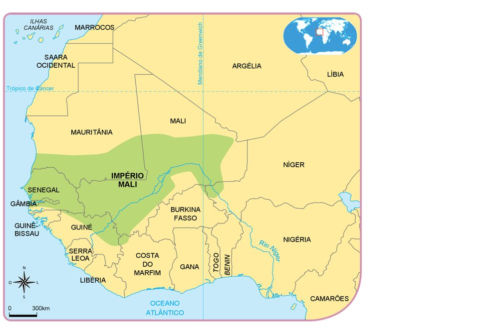
O Império Mali existiu entre os anos de 1235 e 1670 na região ocidental da África Subsaariana (ao sul do Deserto do Saara). Antes de se tornar um império, Mali era um reino submetido ao Império de Gana.
Foi um dos mais importantes impérios do período, e sua riqueza provinha da exploração de ouro, abundante na região. Esse ouro chegava ao Mediterrâneo e ao Oriente Médio por meio dos povos berberes — povos do norte da África que praticavam o comércio atravessando o Deserto do Saara em caravanas no lombo de camelos.
O Império Mali era governado pelo Mansã (imperador), um chefe que, além de ter poder militar e o controle das minas de ouro, era espiritual: ele garantia o elo entre sua comunidade e a ancestralidade.
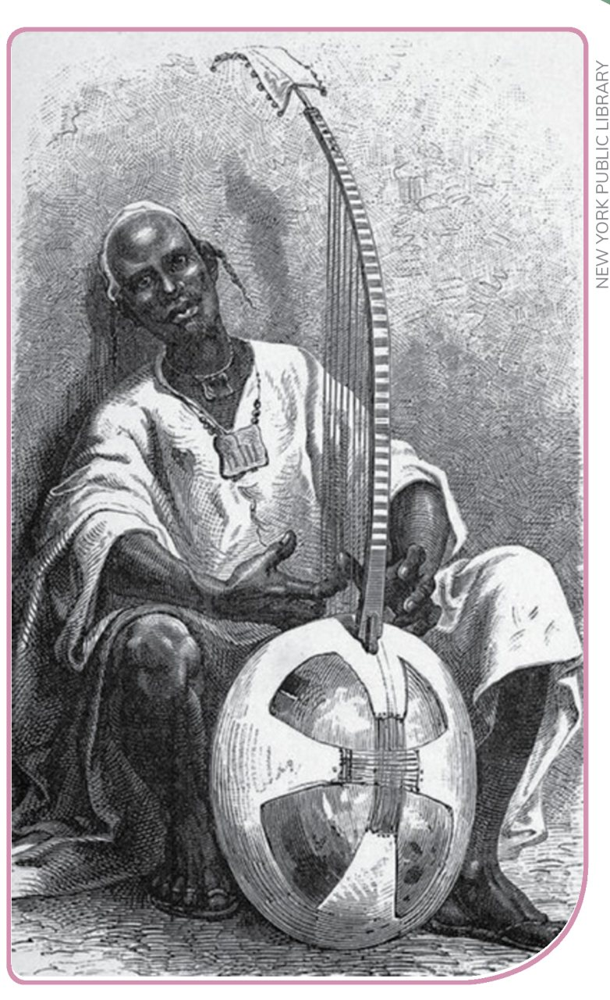
Os griots: guardiões da memória
Quem guardava a história da formação dos reinos, da genealogia dos imperadores e de suas conexões com divindades era a figura do poeta-historiador, conhecido como griot.
Essa era uma função extremamente importante e carregada de poder, pois eles, além de guardiões da memória, validavam o papel espiritual dos imperadores diante dos súditos.
Os griots eram responsáveis por registrar a memória do povo em forma de poesia e música, assim como por realizar apresentações públicas para que elas seguissem vivas. Eram também conselheiros dos reis. Para ser Griot era necessário nascer em família de Griots.
Vocabulário
- Ancestralidade: relativo ao passado. Linha de gerações anteriores de um indivíduo, uma família ou um povo.
- Genealogia: exposição cronológica da filiação de alguém, cujas investigações possibilitam o conhecimento de sua descendência com base em seus ancestrais.
🖋️ Escrita cuneiforme
Textos 1 e 2 — a origem da escrita na Mesopotâmia e o trabalho dos escribas.
A origem da escrita — Texto 1
As escavações arqueológicas indicam que os primeiros registros de escrita foram encontrados na antiga Mesopotâmia, na região do atual Iraque, há cerca de 3 mil anos a.C.
Chamadas de escrita cuneiforme, os primeiros registros escritos da humanidade eram feitos em pequenos tabletes de argila. Esses tabletes eram riscados com caules de junco. Tanto as argilas quanto o junco eram fartamente encontrados nas regiões próximas aos rios.
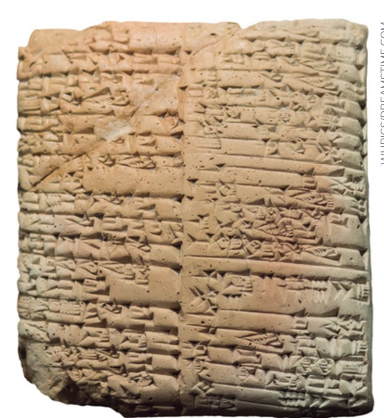
O principal intuito com a escrita era o registro de atividades comerciais e produtivas que aconteciam nas cidades antigas.
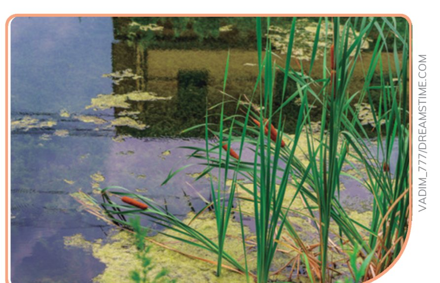
Com a formação dos governos, a divisão do trabalho e o comércio do excedente produtivo para outras cidades, os funcionários dos palácios e templos sentiram a necessidade de controlar a quantidade de cereais, cabeças de gado e de carneiros que iam do campo para a cidade e de uma cidade para outra. A contabilização desses recursos era impossível para a memória humana e precisava de um suporte confiável para seu registro. Foi por essa razão que as primeiras inscrições apareceram nos tabletes de argila.
No início, as inscrições eram tentativas de representar com desenhos os animais ou vegetais que existiam na natureza. Porém, logo essa forma de representação pictórica foi substituída por algo mais prático e eficiente: passaram a desenvolver marcas estilizadas para representar os objetos. O desenvolvimento de sinais para representar as palavras é o que chamamos de escrita. É por isso que a escrita cuneiforme deixou de ser um desenho (pictórica), como as pinturas rupestres, e passou a ser considerada escrita de fato.
Por sua finalidade prática e por registros encontrados nos mesmos períodos em diferentes lugares, acredita-se que não tenha sido uma única pessoa a inventar a escrita, mas que as populações, ao se organizarem em cidades, sentiram a necessidade de fazer registros para possibilitar o controle dos recursos alimentares e têxteis. Esses registros evoluíram e se transformaram no decorrer do tempo, por meio do contato entre diferentes povos, até chegar aos alfabetos que conhecemos hoje.
Vocabulário
- Escrita cuneiforme: escrita criada pelos sumérios há mais de 3 mil anos. Inscrições realizadas em argila com o uso de objetos em formato de cunha. É considerada a mais antiga do mundo. Sua principal função era a contábil.
- Excedente produtivo: é quando se produz mais do que a necessidade de consumo, podendo ser destinada uma parte da produção para venda.
Novas finalidades e os escribas — Texto 2
No início, a finalidade de uso da escrita cuneiforme, desenvolvida pelos povos que viviam na região da Mesopotâmia, era estritamente econômica. Gradativamente, os sinais que representavam palavras como "boi", "carneiro", "sol", "água" foram sendo utilizados para compor outras palavras. Por exemplo, o mesmo sinal de sol passou a ser usado também para representar a palavra dia, ampliando assim ainda mais o vocabulário utilizado.
Tais mudanças possibilitaram que a escrita passasse a cumprir outras finalidades: a escrita literária, de lendas e mitos, foi uma delas, já as outras eram os registros históricos de acontecimentos importantes.
No entanto, era necessário que as pessoas se dedicassem a conhecer os sinais que representavam as palavras. Por isso, nas civilizações antigas passou a existir a função de escriba, alguém que dedicaria sua vida ao estudo da escrita e da leitura. Os escribas passavam por um período de formação, que consistia em copiar exaustivamente nomes de reis e deuses, trechos de textos literários e termos técnicos, até dominarem a arte da escrita. Após esse período, tornavam-se parte da elite daquela sociedade, dotados de muito prestígio.
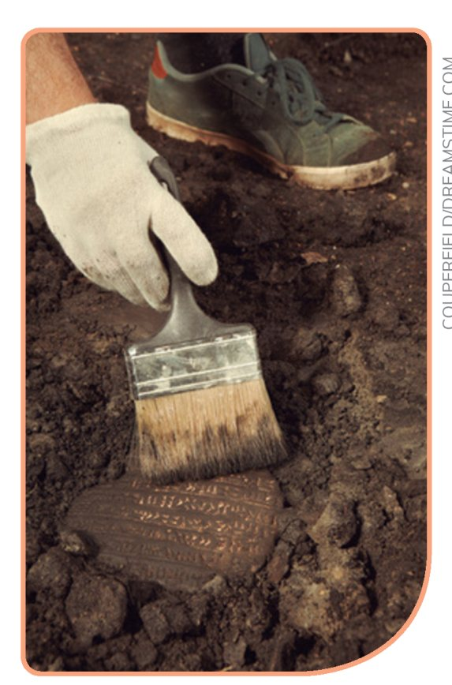
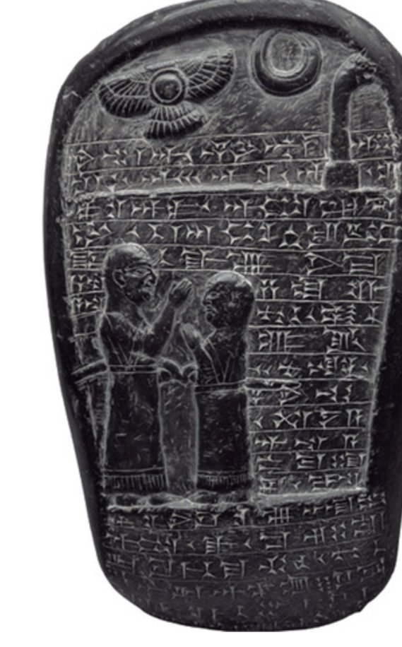
Os reis, em sua maioria, não dominavam a escrita. Dessa forma, começaram a solicitar aos escribas que escrevessem seus nomes e feitos em mármores, pedras e paredes, criando monumentos escritos para lembranças de seus reinados. A aprendizagem da escrita não estava ao alcance de todos, o que ocorre até hoje.
Vocabulário
- Escriba: nas civilizações antigas, referia-se àqueles que dominavam a escrita e eram responsáveis por registros literários, históricos e leis.
- Gradativamente: lentamente, passo a passo.
🔺 Hieróglifos — Texto 3
A escrita sagrada do Egito antigo, esculpida em monumentos de pedra.
Os hieróglifos são a forma mais antiga da escrita egípcia. Os primeiros registros encontrados estavam em pedras e objetos de cerâmica, datados de 3.000 a.C. Também foi possível encontrar registros hieróglifos datados de 100 d.C., o que significa que essa escrita durou mais de 3 mil anos.
Apesar das diferentes finalidades, com o tempo a escrita hieroglífica foi utilizada predominantemente no contexto religioso e monumental, por isso é possível encontrá-la esculpida em grandes monumentos de pedra.
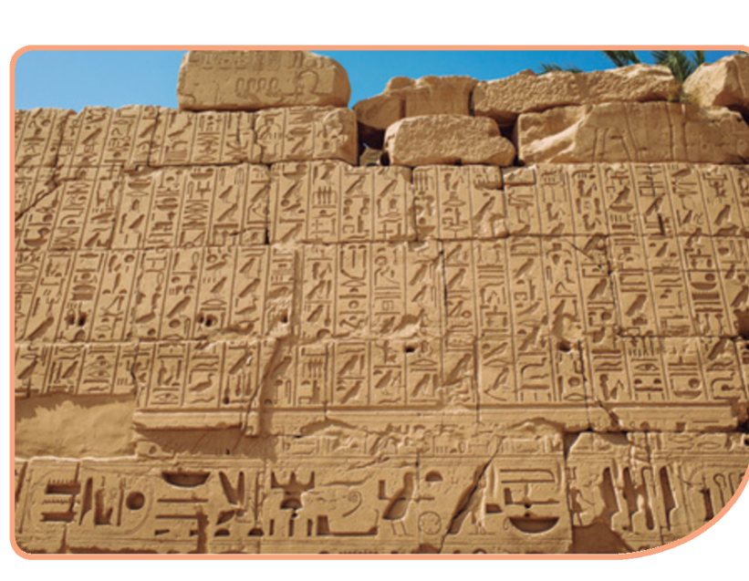
Os hieróglifos mais antigos são, sobretudo, pictóricos, ou seja, animais e objetos são representados de acordo com suas formas naturais, como em um desenho.
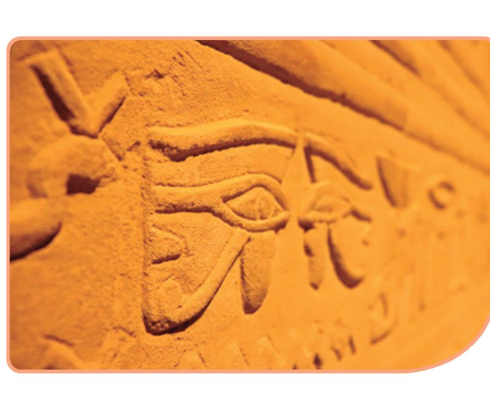
O nome "hieróglifo" significa "letras sagradas", isso explica que para os egípcios não era apenas um sistema de escrita, mas também palavras divinas que detinham poderes mágicos. E ainda, explica o porquê de alguns hieróglifos, como o que representava o deus Hórus, terem sido utilizados como amuletos de proteção.
Vocabulário
- Pictórico: relativo à imagem, que pode ser representado visualmente por meio de desenho.
⏳ Diferentes noções sobre o tempo
O tempo dos astros, o tempo das tarefas e o tempo do relógio.
O tempo dos astros
A passagem do tempo é uma preocupação desde o Período Paleolítico, em que os seres humanos notavam que o SOL se deslocava durante o dia e, com ele, as sombras. Ao final do dia, surgia a LUA, que iluminava a escuridão com suas diferentes fases.
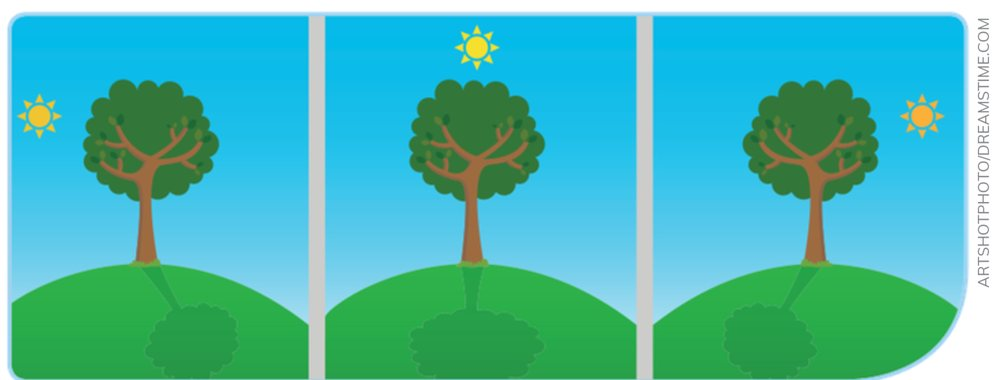
Para nossos ancestrais, o tempo era cíclico e se repetia constantemente. Essa compreensão possibilitava conhecer o comportamento dos animais e das plantas, garantindo caças e coletas mais bem sucedidas.
Monumentos do Período Neolítico, como Stonehenge, dão indícios de que, além do dia e da noite, nossos ancestrais eram capazes de perceber as diferentes posições do sol no decorrer do ano.
A compreensão sobre as estações do ano foi muito importante para a organização da agricultura: a percepção dos tempos de semear e dos tempos de colher. Vestígios arqueológicos, encontrados nas paredes das cavernas ou gravados em ossos, sugerem que os primeiros calendários eram baseados nas fases da lua. O Osso de Ishango, encontrado em um sítio arqueológico no Congo, seria um dos vestígios mais antigos do calendário lunar, que dividia o ano em 6 meses.
Na Mesopotâmia e no Egito antigo, a percepção sobre o tempo se desenvolveu ainda mais, com a construção de obeliscos e, em seguida, de relógios do sol. Esses povos puderam ter mais precisão sobre a passagem do tempo. Foram os povos babilônicos, na Mesopotâmia, que dividiram o ano em 12 meses e o mês em 30 dias. Divisão que utilizamos até os dias de hoje.
O tempo das tarefas
Antes dos relógios, a noção de tempo estava relacionada ao ciclo de tarefas familiares no campo e ao trabalho doméstico. Algumas sociedades, por exemplo, utilizavam o tempo de cozimento de um alimento como referência para determinar a duração de uma tarefa, utilizando expressões como "isso será tão rápido quanto assar o milho".
Não é a hora exata, mas ritmos da natureza, como o cantar de um galo que anuncia o início do dia no campo, que eram e continuam sendo relevantes para a vida no campo. A vida rural é uma sucessão de tarefas cíclicas de cuidado com os animais e com as plantações que não exige precisão de tempo. É a lógica da necessidade do que é preciso ser feito que impera, e não a dos minutos.
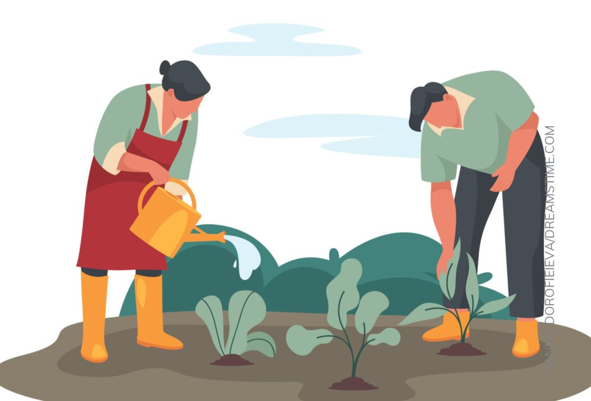
O tempo do relógio
Com a Revolução Industrial (no século XIX) e o surgimento das fábricas, as pessoas deixaram de trabalhar em suas próprias oficinas e plantações e passaram a vender sua mão de obra para o dono da fábrica.
Isso transformou completamente a noção de tempo das sociedades, uma vez que o tempo passou a ser medido em dinheiro. O tempo de trabalho de cada operário é calculado com a precisão das horas e dos minutos.
Outra mudança imposta em consequência do trabalho nas fábricas foi a necessidade de que as tarefas fossem realizadas de maneira síncrona, ou seja, todos ao mesmo tempo, exigindo grande precisão. A pontualidade passou a ser um valor imprescindível para a vida nas cidades, e tal noção é construída desde a infância, com a própria organização do tempo escolar exigindo disciplina.
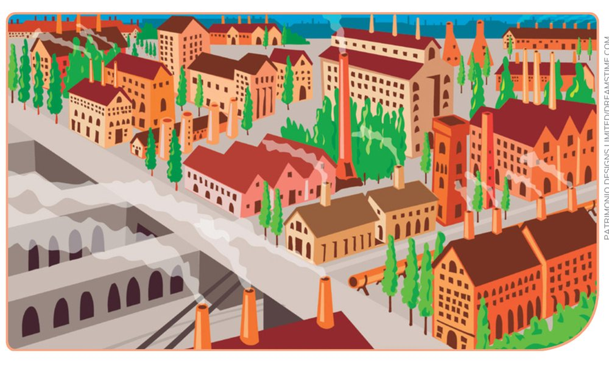
Vocabulário
- Período Paleolítico: refere-se ao mais longo período da Pré-História, com início há cerca de 2,5 milhões de anos. Seu principal marco foi a produção de ferramentas feitas com pedra, que, quando chocadas umas contra as outras, formavam lascas pontiagudas e cortantes. Por isso, é também conhecido como Idade da Pedra Lascada.
- Período Neolítico: período que faz parte da Pré-História. Iniciou há cerca de 10 mil anos e significa pedra polida, isso porque os vestígios desse período indicam que os seres humanos aprimoraram e desenvolveram mais suas técnicas de produção de ferramentas, modelando-as com mais sofisticação.